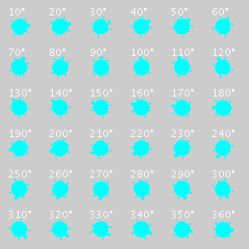

|
|||||||||
| PREV CLASS NEXT CLASS | FRAMES NO FRAMES | ||||||||
| SUMMARY: NESTED | FIELD | CONSTR | METHOD | DETAIL: FIELD | CONSTR | METHOD | ||||||||
java.lang.Object | +--ch.aplu.turtle.TurtleFactory
This class provides functionality for generating images (java.awt.Image)
of a Turtle for any angle, color (java.awt.Color) and size.
The following picture shows turtles for every 10 degrees in standard size and color:

Keep in mind that the angle for the standardTurtle methods are measured in radians and
anticlockwise, where 0 means facing east, in contrast to the
Playground class. The reason for this is that the Playground itself interprets the angle
and position of the turtle.
| Constructor Summary | |
TurtleFactory()
|
|
| Method Summary | |
Image |
standardTurtle(Color color,
double angle)
Generates the Picture of a Turtle with color, angle angle and standard size. |
Image |
standardTurtle(Color color,
double angle,
int size)
Generates the Picture of a Turtle with color, angle angle and size. |
protected Image |
standardTurtle(Color color,
double angle,
int w,
int h)
Generates the Picture of a Turtle with color, angle angle, width w
and height h.
|
Image |
standardTurtle(double angle)
Generates the Picture of a Turtle with angle angle, standard size and standard color. |
Image |
standardTurtle(double angle,
int size)
Generates the Picture of a Turtle with angle angle, size and standard Color. |
| Methods inherited from class java.lang.Object |
clone, equals, finalize, getClass, hashCode, notify, notifyAll, toString, wait, wait, wait |
| Constructor Detail |
public TurtleFactory()
| Method Detail |
public Image standardTurtle(double angle)
angle, standard size and standard color.
public Image standardTurtle(double angle,
int size)
angle, size and standard Color.
public Image standardTurtle(Color color,
double angle)
color, angle angle and standard size.
public Image standardTurtle(Color color,
double angle,
int size)
color, angle angle and size.
protected Image standardTurtle(Color color,
double angle,
int w,
int h)
color, angle angle, width w
and height h.
If you want any other standard Turtle, overwrite ONLY this method.
|
|||||||||
| PREV CLASS NEXT CLASS | FRAMES NO FRAMES | ||||||||
| SUMMARY: NESTED | FIELD | CONSTR | METHOD | DETAIL: FIELD | CONSTR | METHOD | ||||||||